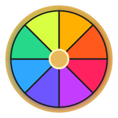

Para amigos
CastroSafio nació para un grupo pequeño de amigos que juega Minecraft junto. No pretende ser una plataforma masiva: está pensado para organizar experiencias privadas, simples y fáciles de mantener.

CastroSafio ClientMINECRAFT JAVA · 1.21.1 · NEOFORGE
CLIENT
Un cliente privado pensado para grupos pequeños de amigos que quieren organizar sus propias series, retos, eventos y mundos modificados de Minecraft sin tener que instalar cada mod o configuración manualmente.
CastroSafio nació para un grupo pequeño de amigos que juega Minecraft junto. No pretende ser una plataforma masiva: está pensado para organizar experiencias privadas, simples y fáciles de mantener.
Permite preparar temporadas, retos y series personalizadas inspiradas en eventos comunitarios de Minecraft, incluyendo formatos similares a Dedsafio y otras series, sin relación oficial ni afiliación con esos proyectos.
El cliente mantiene en una misma versión los mods, configuraciones, resource packs, shaders y otros archivos necesarios para que todos los participantes entren con la misma instalación.
El usuario inicia sesión mediante el navegador oficial de Microsoft.
Se utiliza la sesión para comprobar que el usuario posee Minecraft Java Edition y obtener su perfil.
El cliente puede mostrar el nombre del jugador y su skin de Minecraft.
Prepara Minecraft 1.21.1, NeoForge y los archivos necesarios del grupo.
Sincroniza mods y configuraciones para evitar diferencias entre participantes.
Puede configurarse para iniciar directamente la experiencia o servidor correspondiente.
CastroSafio Client no solicita ni almacena contraseñas de Microsoft. El inicio de sesión se realiza mediante los sistemas oficiales de autenticación de Microsoft en el navegador del usuario.
La aplicación usa la autenticación únicamente para validar el acceso legítimo a Minecraft Java Edition, obtener el perfil de Minecraft y crear una sesión válida para iniciar el juego.
El cliente no está diseñado para evitar la compra de Minecraft, saltarse controles de propiedad ni proporcionar acceso a cuentas que no poseen el juego.
CastroSafio Client is a private Minecraft Java launcher created for a small group of friends who organize custom Minecraft events, challenge series and modded survival experiences.
The client is intended to keep Minecraft 1.21.1, NeoForge, mods, configuration files and resource packs synchronized for all participants. It can also connect to a specific private server used by the group.
Microsoft authentication is performed through the user's web browser. CastroSafio Client does not request or store Microsoft passwords. Authentication is used only to verify legitimate Minecraft ownership, retrieve the Minecraft profile and create a valid authenticated game session.
CastroSafio is not affiliated with Microsoft, Mojang Studios, Dedsafio or other third-party Minecraft series or brands.